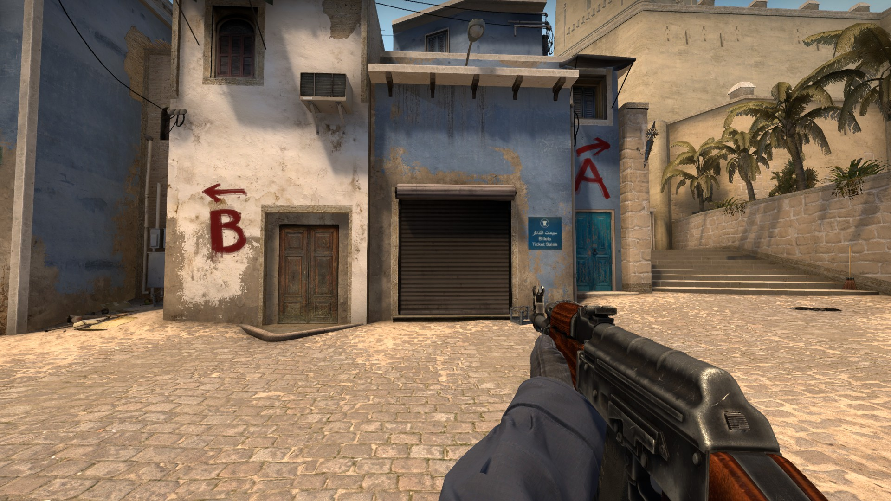

Counter-Strike
Counter-Strike (também abreviado por CS) é um popular jogo eletrônico de tiro em primeira pessoa. Inicialmente criado como um "mod" de Half-Life para jogos online, foi desenvolvido por Minh Le e Jess Cliffe e depois adquirido pela Valve Corporation. Foi lançado em 1999, porém em 2000 ele começou a ser comercializado oficialmente, e posteriormente foram feitas versões para Xbox, Mac OS X e Linux. Atualmente o game é jogado na versão Counter-Strike: Global Offensive.
O jogo é baseado em rodadas nas quais equipes de contra-terroristas e terroristas combatem-se até a eliminação completa de um dos times, e tem como objetivo principal plantar e desarmar bombas, ou sequestrar e salvar reféns.

COUNTER-STRIKE - O jogo
Counter-Strike foi um dos responsáveis pela massificação dos jogos por rede no início do século, sendo considerado o grande responsável pela popularização das LAN houses no mundo.
Os E-sports
O jogo é considerado o originador do "esporte eletrônico", onde muitos jogadores levam-no a sério e recebem salários fixos, existindo até clãs profissionais, e que são patrocinados por grandes empresas como a Intel e a NVIDIA. Pelo mundo existem ligas profissionais onde o Counter-Strike está presente, como o caso da CPL (que encerrou suas atividades em 2008), ESWC, ESL, WCG e WEG. No caso da ESWC funciona da seguinte forma: cada país tem as suas qualificações no qual qualquer clã pode ir a uma qualificação em uma lan house em qualquer parte do mesmo país, passando depois às melhores equipes, as melhores equipes de cada país encontram-se depois no complexo da ESWC, localizado em Paris, para disputar o lugar da melhor equipe do mundo de Counter-Strike.